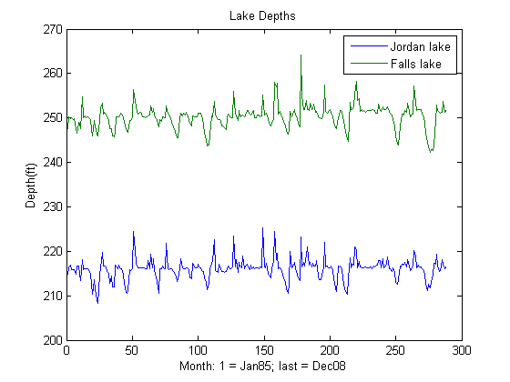

Contents
clear
clc
load water08
whos
Name Size Bytes Class Attributes
depth 288x2 4608 double
hawgage 365x4 11680 double
hawrain 365x2 5840 double
rain 288x2 4608 double
Task 1. Lake Depths
plot(depth);
title('Lake Depths');
legend('Jordan lake','Falls lake');
xlabel('Month: 1 = Jan85; last = Dec08');
ylabel('Depth(ft)');

Task 2. Days above target
jordan_target = 216;
falls_target = 251.5;
jordan_daysAbove = sum(depth(:,1) > jordan_target);
falls_daysAbove = sum(depth(:,2) > falls_target);
jordan_daysAbove
falls_daysAbove
jordan_daysAbove =
186
falls_daysAbove =
75
Task 3. Rain in August
plot(1985:2008,rain(8:12:end,:));
title('August Rainfall');
legend('Jordan lake','Falls lake');
xlabel('Year');
ylabel('Rain(in)');
Task 4. Average depth
falls_average_depth = zeros(1,12);
falls08_average_depth = zeros(1,12);
for m = 1:12
deviation = 0;
for i = m:12:length(depth)
deviation = deviation + (depth(i,2) - falls_target);
end
falls_average_depth(m) = deviation / 12;
end
bar(falls_average_depth);
title('Average Falls lake depth 85-08, and line for 2008');
xlabel('Month: Jan=1, Dec=12');
ylabel('Height above target (ft)');
hold on
for m = 1:12
falls08_average_depth(m) = (depth(m+276,2) - falls_target);
end
plot(falls08_average_depth,'r');
hold off
Task 5. Daily Rainfall
rainAbove1in = 0;
rainBelow1_4in = 0;
rainAbove1in = sum(hawrain > 1);
rainBelow1_4in = sum(hawrain < .25);
rainAbove1in
rainBelow1_4in
rainAbove1in =
7 7
rainBelow1_4in =
330 324
Task 6. Cumulative Rainfall
plot(cumsum(hawrain))
title('Cumulative Rainfall');
legend('gauge1','gauge2');
xlabel('Days since 28Aug07');
ylabel('Cumulative rainfall (in)');
Task 7. Adjusted Gauge Heights
adjusted_hawgage = zeros(365,4);
for i = 1:4
adjusted_hawgage(:,i) = hawgage(:,i) - min(hawgage(:,i));
end
plot(adjusted_hawgage);
title('Adjusted gauge heights');
legend('gauge1','gauge2','gauge3','gauge4');
xlabel('Days since 28Aug07');
ylabel('Height above min (ft)');
Task 8. Max daily increase/decrease
maxincrease = zeros(1,4);
maxdecrease = zeros(1,4);
for i = 2:length(hawgage)
for j = 1:4
daily_change = hawgage(i,j) - hawgage(i-1,j);
if maxincrease(j) < daily_change
maxincrease(j) = daily_change;
elseif daily_change < 0
if maxdecrease(j) < abs(daily_change)
maxdecrease(j) = abs(daily_change);
end
end
end
end
maxincrease
maxdecrease
maxincrease =
1.1600 7.1500 2.5700 4.3700
maxdecrease =
0.4700 6.2200 1.5600 2.5300
Task 9. Gauge Order